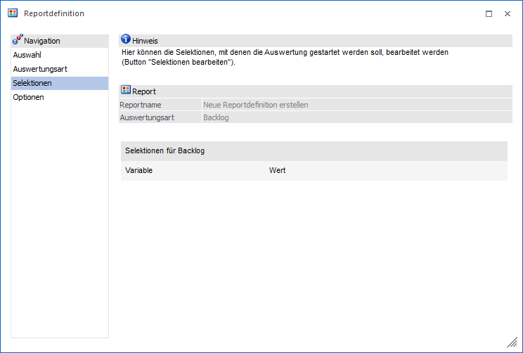
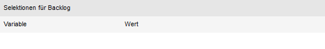
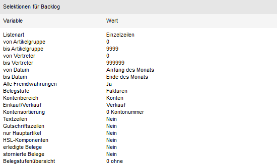
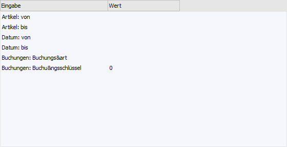
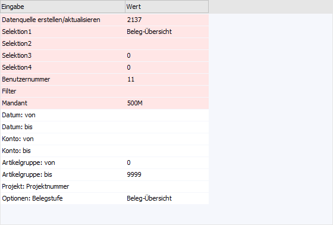

In dem Bereich "Selektionen" können die Selektionen, mit
welcher die Auswertung ausgegeben werden soll, definiert werden.

Folgende Einstellungen und Informationen stehen in diesem
Bereich zur Verfügung:
Report
Ø
Reportname
An dieser Stelle wird der Name des ausgewählten Reports
angezeigt. Handelt es sich um eine Neuanlage einer Reportdefinition, so wird der
Name "Neue Reportdefinition erstellen" ausgegeben.
Ø
Auswertungsart
Hier wird die Art der Auswertung des (ggfs. neuen) Reports
dargestellt, d.h. ob es sich um eine Applikationsauswertung (z.B. Backlog), eine
Listauswertung, eine MesoCalc-Ausgabe, den Datencheck oder einen
Hintergrundprozess handelt.
Selektion
An dieser Stelle wird die Selektion für den Report
dargestellt. Hierbei sind folgende Stati möglich:
ü Selektion noch nicht
vorhanden

Es gibt aktuell
noch keine Selektion für den Report. Die Selektion kann durch Anwahl des Buttons
"Selektion bearbeiten" definiert werden. Dadurch wird das jeweilige
Selektionsfenster geöffnet in dem dann alle gewünschten Eingaben vorgenommen
werden können (genauere Infos zu den jeweiligen Fenstern entnehmen Sie bitte dem
eigenen Kapitel Besonderheiten der
Steuerfenster). Nachdem die Eingaben im entsprechenden Selektionsfenster
getätigt wurden kann dieses durch Drücken des Buttons "Speichern" geschlossen
werden, wodurch man automatisch wieder zurück in die Reportdefinition
gelangt.
ü Selektion bereits
vorhanden

Es gibt bereits
eine Selektion für den Report. Die Selektion kann durch Anwahl des Buttons
"Selektion bearbeiten" geändert werden.
ü Hintergrundprozess - ohne
Datenquelle

Es handelt sich
um einen Report, welcher per Hintergrundprozess (Button "ActionServer Report")
erzeugt wurde. Des Weitere war der Datenquellen-Button, wenn die Auswertung über
diesen verfügt, auf "Keine Datenquelle" gestellt. In diesem Fall kann die
Selektion mit Hilfe der dargestellten Tabelle editiert werden. Sollte ein
Selektionsfeld nicht benötigt werden, so kann dieses durch Anwahl der Entf-Taste
gelöscht werden. Hierbei ist zu beachten, dass das Löschen direkt passiert und
nicht rückgängig zu machen ist.
Hinweis
Es stehen alle Felder zur
Verfügung, welche vor Anwahl des Buttons "ActionServer Report" in der Auswertung
angewählt wurden.
ü Hintergrundprozess - mit
Datenquelle

Es handelt sich
um einen Report, welcher per Hintergrundprozess (Button "ActionServer Report")
erzeugt wurde. Des Weiteren war der Datenquellen-Button auf "Datenquelle
erstellen/aktualisieren" gestellt. Im oberen Teil der Tabelle werden
Informationen zur gewählten Datenquelle angezeigt (rot unterlegt) und können
nicht geändert werden. Die darunter aufgeführte Selektion kann editiert werden.
Sollte ein Selektionsfeld nicht benötigt werden, so kann dieses durch Anwahl der
Entf-Taste gelöscht werden. Hierbei ist zu beachten, dass das Löschen direkt
passiert und nicht rückgängig zu machen ist.
Hinweis
Es stehen alle Felder zur
Verfügung, welche vor Anwahl des Buttons "ActionServer Report" in der Auswertung
angewählt wurden.